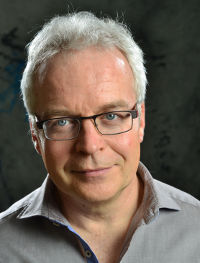

François Bédert a le plaisir de vous annoncer sa collaboration avec Fabienne Grossrieder à Romanel au Centre de Naturopathie Lausanne (CNL).
Passionné depuis 40 ans par les médecines complémentaires, il se réjouit de vous accueillir au CNL à partir du 3 septembre 2018.
Il pratique l’Ostéopathie, avec la même passion, depuis plus de 30 ans.
Durant toutes ces années, il a participé à de très nombreuses formations afin de pouvoir s’adapter et répondre au mieux à sa clientèle. Si nécessaire, il peut ainsi utiliser d’autres techniques telles que la Myothérapie, l’Acu An-Mo, Niromathé, la NST, l’Hypnose, la PNL, la Biorésonance, etc.
D’autre part, il a cocréé O’Centre Formation, centre qui propose des cours d’Autohypnose, de PNL, de Pleine Conscience et prochainement sur le Toucher. D’autres formations suivront au fur et à mesure du développement du centre de formation.
Actuellement il prépare le Diplôme fédéral de Naturopathie.
Il se réjouit de mettre à votre disposition son sérieux, sa passion, ses compétences et ses nombreuses années d’expérience.